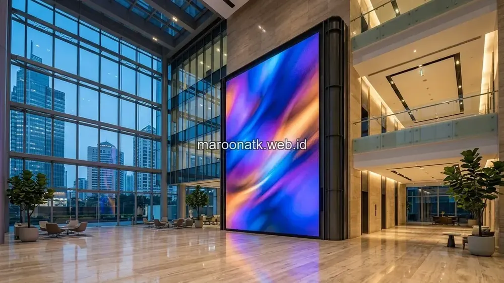
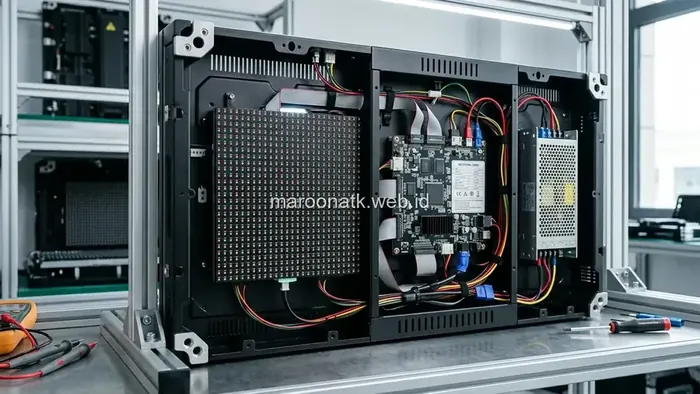
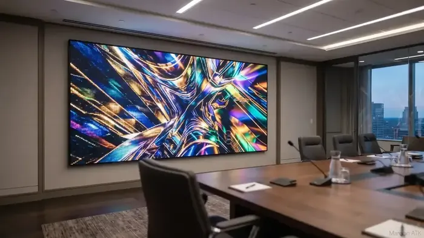
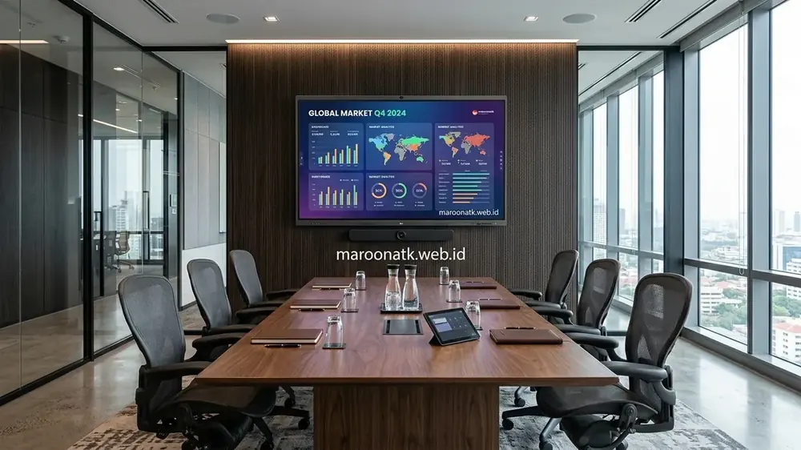

Pentingnya Memilih Vendor Videotron LED yang Profesional
Jawaban singkat: Pemilihan vendor videotron LED di Jakarta perlu mempertimbangkan ketepatan analisis teknis lokasi, kualitas konstruksi bracket baja, sistem kendali video processor, prosedur quality control (QC), pengujian keseragaman panel, serta kejelasan kriteria penerimaan (acceptance criteria) dan garansi purna jual. Untuk isu dead pixel, standar toleransi dan prosedur inspeksi harus disepakati secara tertulis dalam dokumen kontrak pengadaan.
Pengadaan layar visual format besar seperti Videotron LED untuk lobi gedung perkantoran, auditorium korporat, ruang rapat eksekutif (boardroom), maupun ballroom hotel merupakan proyek teknologi bernilai strategis. Keberhasilan implementasi Videotron tidak hanya ditentukan oleh spesifikasi merek panel LED di atas kertas, melainkan sangat bergantung pada keahlian vendor dalam melakukan integrasi menyeluruh.
Banyak komite pengadaan dan procurement manager menyadari bahwa membeli panel secara terpisah tanpa jasa instalator terpercaya mengandung risiko tinggi: struktur bracket yang tidak presisi hingga menimbulkan celah antar kabinet (seam line), ketidakseimbangan pasokan daya listrik yang memicu flickering, hingga ketiadaan prosedur pemeriksaan modul lampu saat serah terima.

Layanan Pengadaan dan Pemasangan Videotron LED dari Distributor Videotron Jakarta
Tahapan perancangan mounting bracket baja, panel daya listrik, hingga kalibrasi warna dan BAST proyek.
Faktor Teknis Utama dalam Perencanaan Videotron
Sebelum menandatangani persetujuan proyek, tim procurement dan IT perlu memastikan bahwa vendor mampu memberikan rekomendasi teknis yang tepat pada aspek-aspek berikut:
1. Penentuan Pixel Pitch Sesuai Jarak Pandang (Viewing Distance)
Pixel pitch (jarak antar titik diode dalam milimeter) menentukan ketajaman visual. Untuk ruangan indoor dengan jarak pandang 2 hingga 4 meter, pixel pitch P1.8 hingga P2.5 sangat ideal agar gambar tidak terlihat pecah. Sedangkan untuk aula besar atau area outdoor, spesifikasi P3.0 hingga P5.0 dapat dipertimbangkan.
2. Tingkat Kecerahan (Brightness) dan Refresh Rate
Videotron indoor membutuhkan tingkat kecerahan seimbang (sekitar 600–1.000 nits) agar nyaman dipandang mata tanpa menyilaukan. Sementara itu, refresh rate minimal 3.840 Hz memastikan rekaman kamera video atau siaran langsung tidak menghasilkan garis hitam bergelombang (scan lines / moiré effect).
3. Konstruksi Bracket Baja dan Distribusi Daya Listrik
Struktur pendukung harus dirancang kokoh dengan tingkat kerataan mikro agar panel kabinet dapat tersusun rapat tanpa celah. Panel daya listrik harus dilengkapi sistem proteksi MCB bertahap dan grounding mandiri untuk mencegah lonjakan arus pendek.

Pemeriksaan modul LED kabinet dan kartu penerima sinyal (receiving card) secara teliti memastikan stabilitas performa layar jangka panjang.

Keunggulan Videotron LED vs Proyektor Konvensional untuk Ruang Rapat & Aula
Komparasi tingkat kontras gambar, usia lampu, dan efisiensi biaya operasional jangka panjang.
Standar Quality Control dan Prosedur Uji Dead Pixel
Salah satu kekhawatiran utama pemesan Videotron LED adalah adanya titik lampu yang mati (dead pixel) atau menyala tidak normal (stuck pixel). Oleh karena itu, penting untuk memahami mekanisme pengujian saat instalasi:
- Uji Pola Warna Solid (Solid Color Test): Teknisi menjalankan pengujian visual dengan memancarkan warna Merah murni, Hijau murni, Biru murni, Putih murni, dan Hitam pekat pada seluruh bentang layar secara bergantian.
- Uji Ketahanan Arus (Aging Test): Layar dinyalakan secara terus-menerus selama periode tertentu (misalnya 24 hingga 72 jam) sebelum serah terima untuk memastikan tidak ada komponen yang mengalami penurunan performa akibat panas kerja.
- Kriteria Penerimaan (Acceptance Criteria): Kebutuhan quality control dan standar toleransi pemeriksaan dead pixel dapat dikonsultasikan serta dituangkan secara tertulis dalam dokumen pengadaan sesuai spesifikasi proyek yang disepakati.

Perbedaan Smart Board dan Proyektor Biasa: Mana Lebih Untung untuk Kantor?
Perbandingan fitur interaktivitas, layar sentuh, dan kolaborasi rapat digital di ruang kerja modern.
Keunggulan Layanan Videotron LED Bersama MAROON ATK
Sebagai penyedia sarana teknologi kantor dan mitra pengadaan B2B terpercaya di Jakarta, MAROON ATK menghadirkan pendekatan terpadu pada setiap proyek Videotron:
- Survey Teknis Lokasi: Pemeriksaan kekuatan dinding struktur, akses kelistrikan, serta sudut pencahayaan ruangan sebelum penerbitan proposal.
- Transparansi Spesifikasi & Komponen: Memberikan rincian merek IC driver, kartu kendali (sending/receiving card), dan material kabinet yang digunakan.
- Dukungan Unit Modul Cadangan: Penyediaan modul LED cadangan (spare parts) dengan batch produksi yang sama untuk menjaga keseragaman warna saat penggantian di kemudian hari.
- Dokumen B2B Lengkap: Penyusunan Surat Penawaran Harga (SPH) resmi berkop perusahaan, Berita Acara Serah Terima (BAST), serta penerbitan e-Faktur PPN 11% yang tertib.
Konsultasikan Kebutuhan Proyek Videotron LED Perusahaan Anda
Layanan Survey Lokasi, Perencanaan Teknis Presisi, dan Dukungan Garansi Resmi
Membutuhkan vendor Videotron LED untuk proyek kantor, retail, institusi, atau kebutuhan event? Konsultasikan spesifikasi, ukuran, lokasi, instalasi, dan kebutuhan quality control bersama MAROON ATK melalui WhatsApp +62 82211221909.
Kesimpulan: Sukseskan Implementasi Visual Digital Bersama Vendor Berpengalaman
Rangkuman Keputusan Proyek Videotron
Memilih jasa vendor Videotron LED bukan sekadar perbandingan harga unit, melainkan komitmen pada ketelitian instalasi, kualitas visual, dan ketenangan operasional jangka panjang.
- Perencanaan Komprehensif: Pastikan survey lokasi dan perhitungan pixel pitch sesuai fungsi ruangan Anda.
- Klausul QC Tertulis: Tuangkan kriteria penerimaan dan prosedur pengujian dalam perjanjian kerja.
- Integrasi Terpercaya: Hubungi tim MAROON ATK untuk mendiskusikan rancangan Videotron LED yang handal dan profesional.
Pertanyaan Umum (FAQ) Jasa Vendor Videotron LED
Sebelum penandatanganan BAST serah terima, procurement dan tim teknis wajib memeriksa kerataan fisik panel kabinet (seamless alignment), keseragaman warna dan kecerahan (color uniformity), kestabilan sinyal video controller, keamanan grounding kelistrikan, serta inspeksi menyeluruh terhadap potensi dead pixel menggunakan pola warna solid (RGBW).
Pemeriksaan dead pixel dilakukan dengan menjalankan software pengujian layar penuh dengan menampilkan warna dasar solid secara bergantian: Merah, Hijau, Biru, Putih, dan Hitam. Hal ini mempermudah tim melihat apakah ada titik lampu diode yang mati total (dead), menyala terus (stuck), atau redup.
Tanyakan mengenai rekomendasi pixel pitch berdasarkan jarak pandang, spesifikasi refresh rate dan IC driver, struktur konstruksi bracket baja pendukung, ketersediaan unit spare modul cadangan, serta prosedur dukungan perbaikan after-sales dan garansi resmi.

Arby Ardiansyah
Arby Ardiansyah merupakan praktisi dan penulis konten MAROON ATK yang membahas kebutuhan pengadaan ATK, furniture kantor, teknologi display, dan tata kelola procurement B2B di Indonesia.